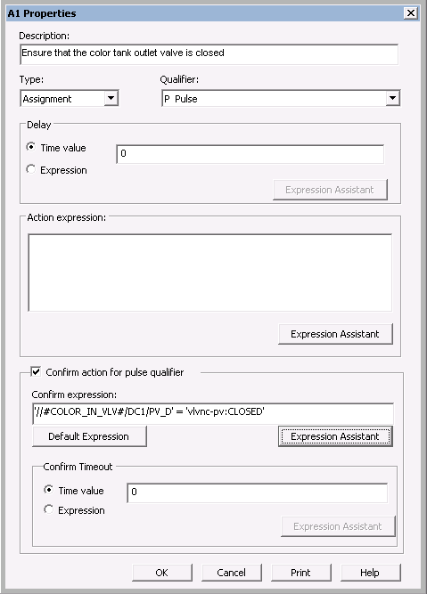
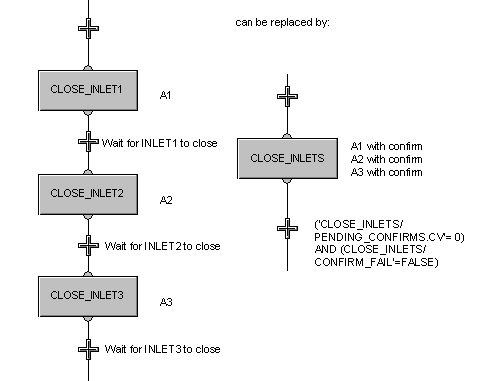

Adding a confirm to an action
You can add a confirm expression to an action that has a pulse qualifier. For instance, you may want to confirm that a valve has closed before going on to the next action or the next step. You can configure the action with a confirm expression, rather than write the expression in a delay condition or transition condition.
After a step (for example, CLOSE_VLVS) that has one or more actions with confirms, you would add a transition or termination with an expression such as:
('CLOSE_VLVS/PENDING_CONFIRMS.CV' = 0) AND
('CLOSE_VLVS/CONFIRM_FAIL.CV' = FALSE)
If there are no pending confirms and no failed confirms, then the step action or actions have completed successfully. If the expression evaluates to TRUE, the SFC will proceed to the next step.
To add a confirm expression, select the action, right-click and open the Action Properties dialog . Check the Confirm action for pulse qualifier box and use the Expression Assistant to write the expression. Or, click the Default Expression button to use the default confirm expression.
As an example, the confirm expression for a step action to close an inlet valve could be written as:
'//#COLOR_IN_VLV#/DC1/PV_D' = 'vlvnc-pv:CLOSED'

A confirm requires either a Timeout value or a Timeout expression. You could either set the Confirm Timeout to a Time value of 5 (meaning that if the valve does not close within 5 seconds, the confirm times out; a timeout value of 0 means there is no time limit on the confirm timeout) or set the Confirm Timeout expression to:
'//#COLOR_IN_VLV#/DC1/FAIL' = 1
meaning that if the inlet valve module fails before the valve is closed, the confirm times out.
When a step becomes active, the PENDING_CONFIRMS parameter for the step is set equal to the number of actions with confirms in the step. In our example, we have one action with one confirm; therefore, PENDING_CONFIRMS is set to 1. When a confirm either completes or times out, the PENDING_CONFIRMS is decreased by one. When all confirm actions within the step have either completed or timed out, PENDING_CONFIRMS is set to 0.
If a confirm condition times out (the Confirm Timeout time expires or the Confirm Timeout expression becomes TRUE before the Confirm expression becomes TRUE), the FAILED_CONFIRMS parameter is incremented by 1 and the CONFIRM_FAIL parameter is set to TRUE.
The CONFIRM_FAIL parameter is available at the action level, the step level, and the state logic level. It can be used in the failure monitoring logic to send the phase to the holding state, send a message to the operator, or take other appropriate action.
In real world batch applications, adding confirms to actions can greatly simplify configuration of the logic, especially when there are numerous actions that have to be completed and confirmed before going on to the next step.
For example, if there were three inlet valves that had to be closed, the actions could be written in separate steps with confirming transition conditions after each, or the three actions could be written in one step followed by a complex transition statement. More concisely, all three actions could be written in one step with a confirm for each action. Adding the confirms to the actions would simplify the logic, as shown in the following diagram.
